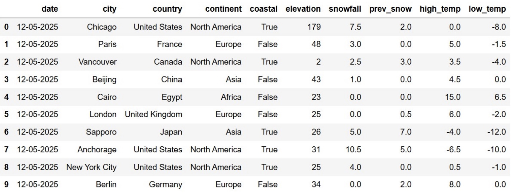
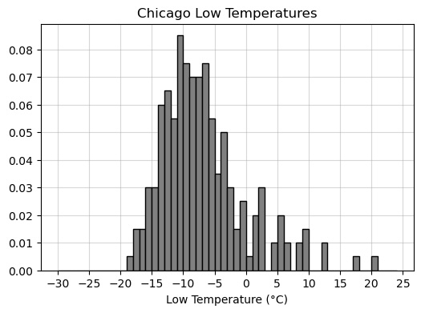
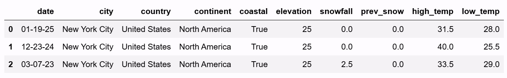
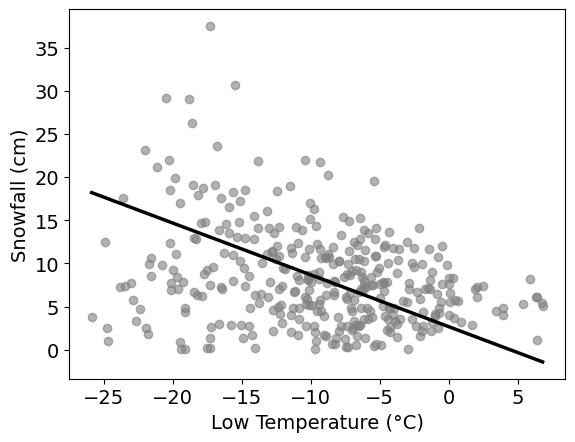

← return to practice.dsc10.com
Instructor(s): Janine Tiefenbruck, Peter Chi
This exam was administered in-person. Students were allowed one page of double-sided handwritten notes. No calculators were allowed. Students had 3 hours to take this exam.
Note (groupby / pandas 2.0): Pandas 2.0+ no longer
silently drops columns that can’t be aggregated after a
groupby, so code written for older pandas may behave
differently or raise errors. In these practice materials we use
.get() to select the column(s) we want after
.groupby(...).mean() (or other aggregations) so that our
solutions run on current pandas. On real exams you will not be penalized
for omitting .get() when the old behavior would have
produced the same answer.
Winter is coming, and everyone is feeling the colder weather. In the
DataFrame snow, each row corresponds to a city-date
combination representing the weather conditions in that city on a
particular day. The DataFrame is sorted by date in reverse chronological
order, with cities in no particular order. The columns are:
"date" (str): The date of the
observation."city" (str): The name of the city. Each
city in our data set has a different name."country" (str): The country in which the
city is located."continent" (str): The continent in which
the city is located."coastal" (bool): Whether the city is
located on a coast."elevation" (int): The elevation of the
city, measured in meters."snowfall" (float): The amount of snow
that fell in the city on that day, measured in centimeters."prev_snow" (float): The amount of snow on
the ground before the snow fell in the city on that day, measured in
centimeters."high_temp" (float): The highest
temperature in the city on that day, measured in degrees Celsius."low_temp" (float): The lowest temperature
in the city on that day, measured in degrees Celsius.The first ten rows of snow are shown below. The full
DataFrame has many additional rows.

Throughout this exam, assume that we have already run
import babypandas as bpd, import numpy as np,
and import scipy.
For each code snippet below, determine the value of the expression on the last line.
def f1(df):
for i in np.arange(len(df.get("high_temp"))):
if df.get("low_temp").iloc[i] < -10:
return i
return -10
f1(snow)Answer: 6
Observe that len(df.get("high_temp")) evaluates to the
number of rows in the DataFrame df, and the for-loop is
iterating through the numerical row indices in df. During
each iteration, we check whether the value of "low_temp" is
less than -10. If it is, we terminate
the loop and return i, the row index at which the first low
temperature is below -10. From here, we
can refer to the preview of the snow DataFrame. Notice that
in the 7th row, there is a low temperature below -10. Our function would hence return 6,
corresponding to that row’s index.
def f2(df):
out = np.array([])
for k in df.index:
snow = df.get("snowfall").iloc[-k]
if snow > 10:
return "snow"
if snow < 1:
out = np.append(out, snow)
return out
f2(snow.sample(snow.shape[0], replace=False))Answer: "snow"
Let’s first understand what DataFrame we are passing into
f2:
snow.sample(snow.shape[0], replace=False).
Since we are sampling "snow" without
replacement, and snow.shape[0] evaluates to the number of
rows in snow, the above expression is actually going to
produce a DataFrame with the same rows as the original
snow DataFrame. The only difference is that rows are now
potentially in a different order. Let us refer to this as the “shuffled”
snow DataFrame.
Note that the index of snow consists of regular
integers. By using iloc[-k], we are essentially iterating
backwards through all entries of the "snowfall" column in
the original snow DataFrame (with the exception of the
first index 0, which we check first because 0
= -0). (Note that .sample() “preserves” the original
index values, but reorders them.)
Finally note the two “if”-statements. If the current entry in the
"snowfall" column is less than 1, we append it to an array
called out. However, if there are any
"snowfall" entries greater than 10, we return
"snow", terminating the for-loop entirely.
Thus: it is sufficient to check the preview of snow in
the data description, and see if any entries in the
"snowfall" column are greater than 10. At index 7, there is
one with 10.5, so we know that the function must return
"snow".
Consider the code snippet below, then answer the questions that follow.
def f(a, b):
if a > 20 and b > 10:
return "blizzard buildup"
elif a == 0 and b > 0:
return "fresh snowfall"
if a > 0 and b > 0 and b <= 5:
return "light accumulation"
elif a > 0 and b == 0:
return "snowy ground"
return "no snow"
results = np.array([])
for i in np.arange(snow.shape[0]):
output = f(snow.get("prev_snow").loc[i], snow.get("snowfall").loc[i])
results = np.append(results, output)True or False: The for loop uses the
accumulator pattern.
True
False
Answer: True
Outside of the for-loop, we initialize an empty array
results. Then, observe that the line
results = np.append(results, output) within the for-loop is
a typical representation of an accumulator pattern.
True or False: The for loop could be
rewritten using the Series method .apply with the provided
function f.
True
False
Answer: False
Note that .apply() is a Series method, meaning that it
can only use values contained within a single Series. However, the
function f has two arguments, reliant on two distinct
Series: the "prev_snow" and "snowfall"
columns. Since .apply() cannot access values from multiple
Series at once given how we’ve written f, the
apply() method is not appropriate.
Which type of plot would be most appropriate to visualize the data in
results?
Scatter plot
Line plot
Bar chart
Histogram
Answer: Bar chart
Since output is the output of the function
f, we can look at what can be returned by f.
The possibilities are "blizzard buildup",
"fresh snowfall", "light accumulation", and
"no snow". We can view these values as part of a
categorical variable to describe (qualitatively) how
much snow is on the ground.
Thus, a scatter plot, line plot, and histogram are inappropriate: we need quantitative/numerical variables for such plots.
This leaves the bar chart as the only acceptable choice.
Determine the value of results[2].
Answer: "light accumulation"
Note that results[2] corresponds to loc[2]
entries in our for-loop, by nature of the accumulator pattern. Since the
index of snow is already numerical, loc[2] and
iloc[2] are equivalent.
We refer to the preview of snow in the data description.
The value snow.get("prev_snow").loc[2] is 3.0, and
snow.get("snowfall").loc[2] is 2.5. We are thus finding the
output of f(3.0, 2.5), where a = 3.0 and
b = 2.5.
Since a = 3 \leq 20, the body of the
first if-statement is not executed. We check the
second. Since a = 3 \neq 0, the body of
the second if-statement is also not executed. We check the third.
Observe that a = 3 > 0, b = 2.5 > 0, and b = 2.5 \leq 5. This condition is satisfied,
so we execute the body of the third if-statement. This returns
"light accumulation".
Bianca and Ella are considering where to travel over their winter
break. While they love the snow, they want to be near the coast and they
get altitude sickness easily.
Fill in the blanks to make a new DataFrame, trip, that
has a row for each date and coastal city pair, such that the
"snowfall" column contains the snowfall for that date in
that coastal city.
trip = snow[__(a)__].groupby(__(b)__).(__(c)__)Fill in the blank for (a), (b), and (c).
For (c), please select all aggregation methods that can go in blank.
median()
min()
count()
max()
sum()
Answer (a): snow.get("coastal")
Answer (b): ["date", "city"] (or any
list that includes these two variables plus additional column names)
Answer (c): median(),
min(), max(), sum()
Explanation (a): The trip DataFrame must contain date
and coastal city pairs, which means that we must filter to only include
coastal cities. Thus, we need to query snow according to
the "coastal" column.
Explanation (b): Again, trip must contain all date and
coastal city pairs. If we group by only one of date or
coastal status, then we will lose data for pairs after the grouping.
Thus, we must group by at least both
"date" and "city".
Explanation (c): Every choice except count() works to
produce the snowfall for each date-coastal city pair. Because there is
only one snowfall value per date-coastal city pair in snow,
the median, min, max, and sum will all return the same numerical
value.
For the same reason, note that count() doesn’t work
because it will output 1. This is not the snowfall for a date in a
coastal city, so we can’t use it.
Bianca and Ella decide to travel to the coastal city with the lowest elevation. Fill in the blanks below so that the expression correctly evaluates to the name of that city.
trip.__(d)___.reset_index().__(e)___.iloc[__(f)__]Answer (d):
sort_values(by="elevation")
Answer (e): get("city")
Answer (f): 0
It’s also fine to sort the other way in blank (d) and use -1 in blank (f).
Explanation (d): Recall that there is one entry in snow
per date-city pair. When we create trip and aggregate using
one of the correct functions in blank (c), this means
that "elevation" data is preserved for that city. Since we
want the cities with lowest elevation, we can thus sort by the
"elevation" column in trip. (Either ascending
or descending order works.)
Explanation (e): We need the name of the coastal
city with lowest elevation, so after sorting, we must extract the city
name from the "city" column.
Explanation (f): Depending on how you sorted in blank (d), we must
now extract the entry associated with lowest elevation. If ascending
order is used, this is the first entry in the sorted
DataFrame: we use iloc[0]. If descending order is used,
this is the last entry in the sorted DataFrame: we use
iloc[-1]. (It may also be possible to use
iloc[trip.shape[0] - 1].)
Define the DataFrames snow1 and snow2 as
follows.
snow1 = snow.take(np.arange(5))
snow2 = snow.take(np.arange(5, 10))Calculate the TVD between the distribution of
"continent" in snow1 and the distribution of
"continent" in snow2. Give your answer as a
simplified fraction.
Answer: \frac{1}{5}
The TVD is the sum of absolute differences in proportions, all
divided by 2. We are essentially comparing categorical distributions of
"continent" in the first five rows of snow
(snow1) against the next five rows of snow
(snow2).
We refer to the preview of snow in the data description.
The counts and corresponding proportions of continents in the first five
rows are as follows:
In the next five rows, the counts and corresponding proportions of continents are:
Let p_k^{(1)} be the proportion
associated with continent k in
snow1. Similarly let p_k^{(2)} be the proportion associated with
continent k in snow2.
Computing the TVD by its definition, we get:
\frac{1}{2} \sum_{k=1}^{4} \left|p_k^{(1)} - p_k^{(2)}\right| = \frac{1}{2}\left(\left|\frac{2}{5} - \frac{2}{5}\right| + \left|\frac{1}{5} - \frac{2}{5}\right| + \left|\frac{1}{5} - \frac{1}{5}\right| + \left|\frac{1}{5} - 0\right|\right) = \frac{1}{2}\left(0 + \frac{1}{5} + 0 + \frac{1}{5}\right) = \frac{1}{2} \cdot \frac{2}{5} = \frac{1}{5}
Suppose we add a new row to snow1 and we also add this
same row to snow2. What will the TVD between the
"continent" distributions be after this change? Give your
answer as a simplified fraction.
Answer: \frac{1}{6}
If we add a new row to snow1 and an identical new row to
snow2, there will be 6 total rows instead of 5. Hence, our
proportions will be out of 6, instead of 5. However, the numerator from
the TVD computation will not change. Suppose c_1 and c_2
are counts for the original snow1 and snow2
respectively, corresponding to the new continent we’ve added. In the new
snow1 and snow2, these counts become:
c_1 + 1 \quad \text{and} \quad c_2 + 1
and the corresponding proportions are
\frac{c_1 + 1}{6} \quad \text{and} \quad \frac{c_2 + 1}{6}.
When computing TVD, we must then compute:
\left|\left(\frac{c_1 + 1}{6}\right) - \left(\frac{c_2 + 1}{6}\right)\right| = \left|\frac{c_1}{6} - \frac{c_2}{6}\right| = \frac{5}{6}\left|\frac{c_1}{5} - \frac{c_2}{5}\right|
Since |c_1/5 - c_2/5| is the absolute difference between original proportions in part (a), the above would suggest that the only difference in TVD is the denominator changing from 5 to 6.
Determine the number of rows in the merged DataFrame below. Give your answer as an integer.
snow1.merge(snow2, on="continent")Answer: 7
Recall our continent counts for snow1 and
snow2 from part (a).
snow1:
snow2:
For each entry in snow1, merging adds an amount of rows
that describes the number of “matches” that entry has with entries in
snow2. For example, the first North America entry in
snow1 will have 2 matches with North America entries in
snow2. Since there are 2 North America entries in
snow1 and 2 North America entries in snow2,
there are a total of 2 \cdot 2 = 4 row
matches for North America across snow1 and
snow2. Following this logic, the resulting number of rows
is:
(2 \cdot 2) + (1 \cdot 2) + (1 \cdot 1) + (1 \cdot 0) = 4 + 2 + 1 = 7 \text{ rows}
Determine the number of rows in the merged DataFrame below. Give your answer as an integer.
snow1.merge(snow2, on="coastal")Answer: 12
Instead of continents, we are now matching values in the
"coastal" column. The counts are as follows:
snow1:
snow2:
The logic is the same as in part (c), and computing accordingly, we get:
(2 \cdot 3) + (3 \cdot 2) = 6 + 6 = 12 \text{ rows}
Suppose that the full snow DataFrame has n rows, and t of these rows have a value of
True in the "coastal" column. Give a
mathematical expression, in terms of n and t, for
the number of rows in the DataFrame
snow.merge(snow, on="coastal").
Answer: t^2 + (n-t)^2 = n^2 - 2nt + 2t^2
If there are t rows that contain
True and there are n total
rows, we know that there must be n - t
rows that contain False.
If we merge snow with itself on the
"coastal" column, each True entry in
snow will have t matches
with True entries in the “other” snow
DataFrame (since we are working with the same DataFrame). Similarly,
each False entry will have n -
t matches with other False entries. Since there are
t True entries and n - t False entries, this
results in
(t \cdot t) + \Big((n-t) \cdot (n-t)\Big) = t^2 + (n-t)^2
rows in the resulting DataFrame.
Imagine that instead of having access to all of snow,
which is quite a large DataFrame, we have only a simple random sample of
100 rows. We’ll call our sample flurry because it’s just a
little bit of snow.
Which of the following parameters would be appropriate to estimate using a CLT-based confidence interval? Select all that apply.
The median of the "snowfall" column of
snow.
The mean of the "snowfall" column of
snow.
The standard deviation of the "snowfall" column of
snow.
The largest value in the "snowfall" column of
snow.
None of the above.
Answer: The mean of the "snowfall"
column of snow.
Note that the Central Limit Theorem works only for means and sums.
Which of the following parameters would be appropriate to estimate using a bootstrapped confidence interval? Select all that apply.
The median of the "snowfall" column of
snow.
The mean of the "snowfall" column of
snow.
The standard deviation of the "snowfall" column of
snow.
The largest value in the "snowfall" column of
snow.
None of the above.
Answer: The median, the mean, and the standard
deviation of the "snowfall" column of
snow.
Note that only the largest value — the maximum — doesn’t make sense here. The true maximum must be greater than or equal to the maximum of our sample. (Otherwise, it is not the true maximum!) Instead of bootstrapping for the maximum, it makes more sense to immediately take the largest value of our given sample (since we can’t bootstrap a larger maximum out of a fixed sample).
Now we want to estimate the proportion of rows in snow
that correspond to coastal cities, using only the data in
flurry. In flurry, 70 rows correspond to
coastal cities and 30 rows correspond to non-coastal cities.
The endpoints of a 95% confidence interval for this parameter can be expressed in the form
\frac{A}{10} \pm B\sqrt{\frac{C}{10000}}
where A, B, and C are all integers. Give the values of these integers below.
A = ___ B = ___ C = ___
Answer: A = 7, B = 2, C = 21
Thinking of the proportion as a mean of 1s and 0s, we can use the Central Limit Theorem. This gives us that the distribution of sample proportions is approximately normal. It will be centered around the sample mean, which in this case is 0.7. The standard deviation will be the sample standard deviation divided by the square root of the sample size. The standard deviation in this case is \sqrt{0.7(1 - 0.7)}, and the square root of the sample size is \sqrt{100}. For a 95% confidence interval, we need to go out two standard deviations in either direction, so our confidence interval is:
\left[0.7 - 2 \cdot \frac{\sqrt{0.7(1-0.7)}}{\sqrt{100}},\ 0.7 + 2 \cdot \frac{\sqrt{0.7(1-0.7)}}{\sqrt{100}}\right]
Next we want to take a new sample from snow that will
allow us to estimate the proportion of rows in snow with a
recorded "snowfall" of 0 centimeters. We want our new
sample to be just large enough to guarantee that a 95% CLT-based
confidence interval for this proportion is not wider than 0.1. How large
of a sample should we take? Give your answer as an
integer.
Answer: 400
The width of a 95% confidence interval is 4 \cdot \frac{\text{Sample SD}}{\sqrt{\text{Sample Size}}}. For 0s and 1s, the biggest possible standard deviation would be \sqrt{0.5 \cdot 0.5}, so we can assume that’s our sample standard deviation to get a conservative estimate. That gives:
0.1 \geq 4 \cdot \frac{\sqrt{0.5 \cdot 0.5}}{\sqrt{N}}
Solving for N, we get:
\sqrt{N} \geq 4 \cdot \frac{0.5}{0.1}
\sqrt{N} \geq 4 \cdot 5
N \geq 400
So N = 400 is the smallest sample size we could take to guarantee a 95% confidence interval width of 0.1 or less.
Recall that flurry is a simple random sample of 100 rows
from snow.
Fill in the blanks in the code below so that means
evaluates to an array of 5000 bootstrapped estimates for the mean
"snowfall" value in snow.
means = np.array([])
for i in np.arange(5000):
resample = flurry.sample(___(a)___)
means = np.append(means, __(b)__)Answer (a): 100, replace=True or
flurry.shape[0], replace=True
Answer (b):
resample.get("snowfall").mean()
Explanation (a): When bootstrapping, each resample must have the same size as the original sample and be taken with replacement.
Explanation (b): Since we are estimating mean
"snowfall", we must compute the corresponding quantity
within each resample.
Imagine we were to take 1000 new samples directly from
snow, each of size 100, and compute the mean
"snowfall" value for each sample. Which of the following
gives a reasonable approximation for the standard deviation of this set
of sample means? Select all that apply.
np.std(snow.get("snowfall"))
np.std(snow.get("snowfall")) / np.sqrt(snow.shape[0])
np.std(snow.get("snowfall")) / 10
np.std(means)
np.std(means) / np.sqrt(5000)
Answer:
np.std(snow.get("snowfall")) / 10 and
np.std(means)
The means from (a) and the sample means of these 1000
new samples are approximating the true distribution of sample means for
"snowfall". From lecture, the sample mean and SD are likely
to be close to the population mean and SD. Thus, the SD of
means and the SD of the new collection of sample means will
be similar to each other (because they are both approximating the same
population parameter). The choice np.std(means) is
correct.
We look for other options that approximate the SD of sample means distribution. From the original sample, note that this can be approximated as follows:
\frac{\text{Sample SD}}{\sqrt{\text{sample size}}}
Since our original sample is given by
snow.get("snowfall"), the sample SD is given by
np.std(snow.get("snowfall")). We now need to divide by the
square root of the sample size, which is given to be 100. Since \sqrt{100} = 10, it follows that
np.std(snow.get("snowfall")) / 10 is correct.
The other options are incorrect because they do not approximate the SD of the distribution of sample means.
The following code prints a C%
bootstrapped confidence interval for the mean "snowfall"
value in snow, using the 5000 bootstrapped estimates stored
in the array means and cutting off an equal amount from
each tail.
X = ___(a)___
ci_low = np.percentile(means, X)
ci_high = np.percentile(means, 24 * X)
print([ci_low, ci_high])(i.) What goes in blank (a)? In other words, what is
the value of the variable X? Give your answer as an
integer.
(ii.) What is the value of C? In other words, what is the confidence level of the interval produced? Give your answer as an integer.
Answer (i.): 4
Note that the values X and 24 * X must be
between 0 and 100. Furthermore, a bootstrapped C% confidence interval places equal
probability mass in the left and right tails of the bootstrapped
distribution. Here, this property can be expressed as follows:
|X - 0| = |100 - 24X|
Solving for X yields:
X - 0 = 100 - 24X
25X = 100
X = 4
Indeed if X = 4, then 24X = 24(4) = 96, such that 100 - 96 = 4. This is a valid bootstrapped confidence interval.
Answer (ii.): 92
We saw that X = 4 in part (a). Our left endpoint corresponds to the 4th percentile. Our right endpoint corresponds to the 96th percentile. This means that C = 96 - 4 = 92.
Chicago, nicknamed the “Windy City,” reaches some pretty low
temperatures. Define the variable chi_low as follows.
chi_low = snow[snow.get("city") == "Chicago"].get("low_temp")Without making any assumptions about the data in
chi_low, determine the minimum proportion of values that
lie within 3 standard deviations of the mean. Give your answer as a
simplified fraction.
Answer: \frac{8}{9}
Since we have made no assumptions about the data, we use Chebyshev’s inequality. We want to be within 3 SDs of the mean. Therefore, the proportion is:
1 - \frac{1}{3^2} = 1 - \frac{1}{9} = \frac{8}{9}
You are told that the mean of chi_low is -7^\circC and the standard deviation is 6^\circC. Define a variable x
such that x.mean() calculates the actual proportion of
values that lie within 3 standard deviations of the mean.
x = ___Answer:
(chi_low >= -25) & (chi_low <= 11) or
(chi_low >= -7 - 6 * 3) & (chi_low <= -7 + 6 * 3)
or -25 <= chi_low <= 11 or equivalent
The mean is -7 and the SD is 6. Thus the range that is within 3 SDs of the mean is given by
[-7 - 3 \cdot 6,\ -7 + 3 \cdot 6] = [-7 - 18,\ -7 + 18] = [-25, 11]
If x is a Boolean series, then taking the mean of
x is equivalent to finding the proportion of
True values in x. (Recall that
True = 1 and False = 0, so taking the mean is
equivalent to counting all instances of True then dividing
by the total number of entries in the Series.)
All answer options above create a Boolean series x that
checks whether each entry in chi_low belongs to the range
[-25, 11]. As a result,
x.mean() will tell us the proportion of values within 3 SDs
of the mean.
You’re now given a density histogram with the full distribution of
data in chi_low. Recall this data has a mean of -7^\circC and a standard deviation of 6^\circC.

Use the histogram to calculate the proportion of values that lie within 3 standard deviations of the mean. Your answer should be a number between 0 and 1, to two decimal places.
Answer: 0.98
We use our answer to part (b) and check the proportion of values that belong to the interval [-25, 11]. Note that all values are at least as large as -25. However, there are three “bars” that lie above 11. These are the values that lie outside 3 SDs of the mean. If we find the proportion of values represented in these three bars, we can subtract this proportion from 1 to find the proportion of values that lie within 3 SDs of the mean.
To compute proportion, we find the area of each bar. The width of each bar is 1, and the heights of the three bars are 0.01, 0.005, 0.005 (approximately). Their total area is therefore:
1(0.01 + 0.005 + 0.005) = 0.02
Hence 1 - 0.02 = 0.98 is the proportion of values within 3 SDs of the mean.
On the warmest Chicago day recorded in snow, the low
temperature was 20^\circC. Express this
temperature in standard units relative to other Chicago lows. Give your
answer as an exact decimal.
Answer: 4.5
Recall the formula for x in standard units:
\frac{x - \text{mean}}{\text{SD}}
When x = 20, mean is -7, and SD is 6, the corresponding value in standard units is:
\frac{20 - (-7)}{6} = \frac{27}{6} = \frac{9}{2} = 4.5
Suppose we collected four times as much data as currently depicted in the histogram above, then plotted a new histogram of the larger data set. How would we expect the standard deviation of temperatures to change?
Decrease by a factor of 4.
Decrease by a factor of 2.
No substantial change.
Increase by a factor of 2.
Increase by a factor of 4.
Answer: No substantial change.
Note that this is not a distribution of sample statistics, but a distribution of a sample itself. Hypothetically, if we collected many more individual low temperatures, we would expect them to be distributed similarly to our current sample. Thus, the SD will stay generally the same.
(It would also help to recall that the sample standard deviation can be used to approximate the population standard deviation. Thus, if the initial sample size is “large enough,” increasing the sample size should not substantially change the approximation of the population standard deviation.)
What kind of distribution does the histogram depict?
Probability distribution.
Empirical distribution.
Categorical distribution.
None of the above.
Answer: Empirical distribution.
The probability distribution is a theoretical model and is generally not known. Since we only have a sample of low temperatures, there are many more not included in the distribution. Thus, the histogram cannot represent the true probability distribution.
This is not a categorical distribution because
"low_temp" is a quantitative variable.
This is an empirical distribution, because it depicts the distribution of our observed data.
Each city in snow is represented many times, across
multiple days. Let the maximum snowfall of a city be the
maximum snowfall on any single day recorded for that city. If we want to
compute the average maximum snowfall of all cities on a
continent, we would first compute the maximum snowfall of every city on
that continent, then take the mean of the resulting values.
Using the above definitions, you want to test the following pair of hypotheses:
You decide to write a permutation test for the above hypotheses. Fill in the blanks of the code below to complete the permutation test and calculate a p-value.
1. cities = snow.groupby(__(a)__).__(b)__
2. asia_na = cities[(cities.get("continent") == "Asia") |
3. (cities.get("continent") == "North America")]
4.
5. def test_stat(shuffled):
6. grouped = shuffled.groupby(__(c)__).__(d)__
7. asia = grouped.get("snowfall").loc["Asia"]
8. na = grouped.get("snowfall").loc["North America"]
9. return __(e)__
10.
11. stats = np.array([])
12. for i in np.arange(10000):
13. s = np.random.permutation(asia_na.get("snowfall"))
14. shuffled = asia_na.assign(snowfall=s)
15. stat = test_stat(shuffled)
16. stats = np.append(stats, stat)
17.
18. extreme = (stats <= test_stat(cities))
19. p_value = np.count_nonzero(extreme) / 10000Answer (a): "city"
Answer (b): max()
Answer (c): "continent"
Answer (d): mean()
Answer (e): na - asia
We are told that to compute average maximum snowfall, we must first
compute the maximum snowfall per city, then take the average within each
continent. The first step is completed in blanks (a) and (b), where we
must first group by "city" then aggregate by the
max() function. Blanks (c) and (d) correspond to the second
step, where we must now group maximum snowfall by
"continent" and take the average.
Blank (e) requires you to realize that the alternative hypothesis is phrased differently than how it is expressed in the code.
Let AMS stand for “average maximum snowfall.” The alternative
hypothesis is that Asian AMS is greater than North American AMS.
However, the extreme variable in the code is checking for
values that are smaller than the observed statistic
test_stat(cities). Thus, when Asian AMS is much larger than
North American AMS, the quantity na - asia will be more
negative and thus be considered more extreme under the alternative
hypothesis. Blank (e) should be na - asia.
Note that asia - na is wrong, because
this test statistic corresponds to a different alternative hypothesis:
North American AMS is greater than Asian AMS.
You also come up with the following pair of null and alternative hypotheses:
Suppose you can change at most one line in the code from part (a) to test these new hypotheses. Indicate the number of the line you should change and fully rewrite that line. Or, if you believe no changes to the code in part (a) are necessary, fill in the bubble provided and leave the boxes blank.
Answer: Line number to change: 18 or No lines should be changed.
The code in this line should be changed to the following:
extreme = (np.abs(stats) >= abs(test_stat(cities)))
or
extreme = (np.abs(stats) >= abs(test_stat(asia_na)))
Another solution is to change line 9 to
return -abs(na-asia) or -abs(asia-na).
The alternative is now two-sided. To reflect this, we can either edit our test statistic in Line 9, or edit which values are considered extreme in Line 18.
The absolute difference is a good candidate for the new test
statistic. However, since we are only changing the test
statistic, we must be careful to remember that the extreme
variable counts values that are smaller than the
observed statistic. Thus, we must add a negative sign outside the
absolute difference. This allows us to find evidence for the correct
alternative hypothesis.
We can also change the extreme region. By taking
absolute value of the difference test statistics, we are effectively
covering both “tails” of our distribution and satisfying the two-sided
nature of the alternative.
You successfully complete a permutation test and obtain a p-value for the hypotheses in part (b). Call this p-value p_b. Unfortunately, your computer runs out of battery before you can compute a p-value for the hypotheses in part (a). Call this p-value p_a. Can you use p_b to approximate p_a? If so, how?
No. p_b cannot be used to approximate p_a, because the maximum snowfall for each continent cannot be assumed to have a symmetric distribution.
Yes. Divide p_b in half to approximate p_a, because the difference of means is symmetric around 0 under the null hypothesis.
Yes. Multiply p_b by two to approximate p_a, because the difference of means is symmetric around 0 under the null hypothesis.
Yes. p_b is approximately the same as p_a, because the null hypothesis is the same in both tests.
Answer: Yes. Divide p_b in half to approximate p_a, because the difference of means is symmetric around 0 under the null hypothesis.
The test in (a) is one-sided, while the test in (b) is two-sided. Thus, the area corresponding to the “extreme” region will be twice as large on a two-sided test compared to a one-sided test. We must divide p_b in half to approximate p_a.
The first choice (“No”) has an irrelevant explanation, because the distribution of sample average maximum values is approximately normal, according to CLT. Hence, the distribution is symmetric. Because the distribution is symmetric, we expect approximately equal probability mass in the left and right tails, so dividing by 2 is a valid way to approximate p_a from p_b.
As a resident of New York City, you suspect that your local news channel tends to overestimate the percent chance of snow in its daily weather forecast. To investigate this, you look at historical weather forecasts, and decide to focus specifically on days in which your local news channel had predicted a 40% chance of snow. With the benefit of hindsight, you can now see whether it actually snowed on 40% on those days.
The DataFrame snow has been queried to contain only
those days that had a 40% predicted chance of snow, for New York City,
stored in a new DataFrame called snow_nyc40. A few rows of
snow_nyc40 are shown below, but there are more rows not
pictured.

You set out to test the following hypotheses:
Fill in the blanks in the code below, which should calculate an observed test statistic, generate an empirical distribution of this test statistic under the null hypothesis, and calculate a p-value for the hypothesis test.
obs_stat = np.count_nonzero(snow_nyc40.get("snowfall"))
counts = np.array([])
for i in np.arange(10000):
new_count = __(a)__
counts = np.append(counts, new_count)
p_value = np.count_nonzero(counts __(b)__ obs_stat) / len(counts)Answer (a):
np.random.multinomial(snow_nyc40.shape[0], [0.4, 0.6])[0]
Answer (b): <=
If it snows on a day, the corresponding entry in
"snowfall" will be greater than 0. We have a proposed
distribution under the null hypothesis, which can be described as 40%
days with more than zero snowfall, and 60% days with zero snowfall. To
simulate counts, according to this null hypothesis, we can use
np.random.multinomial(). Note that since we are comparing
counts, we must use the same total as our original sample,
snow_nyc40 which is given by
snow_nyc40.shape[0].
Our alternative states that less than 40% of days are snow days. Note
that obs_stat is computing the number of days in
snow_nyc40 that experienced more than zero snowfall. So,
test statistics that are smaller than or equal to the observed will be
in favor of the alternative hypothesis.
You want to test the same pair of hypotheses another way, using a different test statistic and rewriting the code in part (a). Which of the following could be the observed statistic for a new hypothesis test for the same pair of hypotheses? Select all that apply.
np.count_nonzero(snow_nyc40.get("snowfall") == 0)
(snow_nyc40.get("snowfall") > 0).sum() / snow_nyc40.shape[0]
(snow_nyc40.get("snowfall") > 0).mean() - 0.40
(snow_nyc40.get("snowfall")).sum() / snow_nyc40.shape[0]
None of the above.
Answer:
np.count_nonzero(snow_nyc40.get("snowfall") == 0),
(snow_nyc40.get("snowfall") > 0).sum() / snow_nyc40.shape[0],
and (snow_nyc40.get("snowfall") > 0).mean() - 0.40
The first choice can be used to test the following alternative: “There is no snowfall on more than 60% of the days for which the news predicts a 40% chance of snow.” This is equivalent to our original alternative hypothesis.
The second choice simply converts the original test statistic (a count) into its corresponding proportion, which isn’t going to affect our hypotheses.
The third choice also converts the test statistic into a proportion
(using mean()). It additionally subtracts a constant. Since
0.40 is subtracted from all test statistics, however, the conclusion we
make will not change and thus the corresponding hypotheses remain the
same.
Note that snow_nyc40.get("snowfall") is not a Boolean
series, therefore snow_nyc40.get("snowfall").sum() will not
help us determine whether (fewer than) 40% of days are snow days.
You also calculate a 95% CLT-based confidence interval for the proportion of days on which it actually snowed in New York City, among those for which a 40% chance of snow was predicted. Your confidence interval comes out to [0.17, 0.32]. Which of the following conclusions is correct?
Because this confidence interval does not contain the value of 0.50, it indicates that the p-value from the hypothesis test above should be below 0.05.
Because this confidence interval does not contain the value of 0.40, it indicates that the p-value from the hypothesis test above should be below 0.05.
Because this entire interval is above 0, it indicates that the p-value from the hypothesis test above should be above 0.05.
There is no connection between this confidence interval and the hypothesis test because the Central Limit Theorem does not apply in this situation.
There is no connection between this confidence interval and the hypothesis test because this confidence interval is for a proportion and the hypothesis test was performed with counts.
Answer: Because this confidence interval does not contain the value of 0.40, it indicates that the p-value from the hypothesis test above should be below 0.05.
We can use CLT since we are working with proportions. Hence, the 95% CLT-based confidence interval for the population parameter (the true proportion) can be used to reject/fail to reject the null hypothesis. Since 0.4 (the proposed proportion under the null) does not belong in our CLT-based confidence interval for the true proportion, it lies in the (100 - 95)\% = 5\% region not contained by the confidence interval. The p-value of the hypothesis test must therefore be smaller than 0.05.
Pranav works for a ski resort and is curious about the relationship
between the daily low temperature (°C) and snowfall (cm). He collects
his own data set, recording each of these variables over a period of
many days, and storing them in arrays low_temp and
snowfall, respectively. He decides to use linear regression
to predict snowfall from low_temp. His
regression line is shown below on a scatterplot of the data.

The correlation between low temperature and snowfall at the ski resort is -0.4. The standard deviation of low temperature is 6°C and the standard deviation of snowfall is 9cm. What is the slope of the regression line predicting snowfall from temperature?
-0.4
-0.5
-0.6
-0.7
Answer: -0.6
Recall that the slope of a linear regression line can be computed as follows:
\text{slope} = r \cdot \frac{\text{SD}_y}{\text{SD}_x}
where r is the correlation, \text{SD}_x is the standard deviation of the x variable (independent/explanatory variable), and \text{SD}_y is the standard deviation of the y variable (dependent/response variable).
From the plot, we can see that x is the Low Temperature, and y is the Snowfall. Plugging in the corresponding values:
\text{slope} = -0.4 \cdot \frac{9}{6} = -\frac{2}{5} \cdot \frac{9}{6} = -\frac{2}{5} \cdot \frac{3}{2} = -\frac{3}{5} = -0.6
You are now told that the intercept of the regression line is 3. Which of the following is the correct interpretation of the intercept?
The average snowfall in the dataset is 3cm.
When the snowfall is 0cm, the predicted temperature is 3°C.
When the temperature is 0°C, the predicted snowfall is 3cm.
The intercept has no interpretable meaning in this context.
Answer: When the temperature is 0°C, the predicted snowfall is 3cm.
We are predicting snowfall using temperature. Our regression line is given by \hat{y} = mx + b, where m is the slope, b = 3 is the intercept, x represents the lowest temperature, and \hat{y} represents the predicted snowfall. If we let x = 0, then \hat{y} = m(0) + 3 = 3. Indeed, the predicted snowfall (\hat{y}) is 3cm when temperature (x) is 0°C.
Estimate the value of the largest residual. Give your answer as an integer, to the nearest multiple of 5.
Answer: 25
For a temperature-snowfall pair (x_i, y_i), let y_i be the actual snowfall and \hat{y}_i be the predicted snowfall when you input x_i into the regression line \hat{y} = mx + b. The residual is given by the following:
y_i - \hat{y}_i
Our primary goal is to find a temperature-snowfall pair where the prediction \hat{y}_i is the “farthest off” from the actual value y_i. If you observe low temperatures within the range [-20, -15], there is a snowfall value that is considerably “farther away” from the regression line compared to all other points. The point is approximately located at (-17.5, 40), where 40 is the actual snowfall. We compare this to the value of the regression line at approximately x = -17.5. Since we are rounding to the nearest multiple of 5, we visually approximate the value on the regression line as (-17.5, 15). The residual is therefore 40 - 15 = 25.
Which of the following best describes what the residual plot would look like?
Residuals increase steadily as temperature increases.
Residuals form a bowl shape (curved, high on both ends).
Residuals have more vertical spread on the left than on the right.
Residuals show no pattern and have constant vertical spread throughout.
Answer: Residuals have more vertical spread on the left than on the right.
A trick you can use to visualize residuals is to angle your vision such that the linear regression line becomes “horizontal.” Then, imagine that the “horizontal” regression line is the x-axis and the points around it are the residuals.
We can see that the residuals become more “vertically squeezed together” in the plot as you travel left to right along the regression line. This is equivalent to saying that residuals have more vertical spread (variation) on the left than on the right.
Which of the following conclusions are valid? Select all that apply.
The variability of the residuals changes with temperature.
A curved model (such as a quadratic) would clearly fit this data better than a line.
A different prediction line could eliminate the pattern seen in the errors.
The linear model is appropriate, but prediction uncertainty is not constant across temperatures.
None of the above.
Answer: The variability of the residuals changes with temperature. The linear model is appropriate, but prediction uncertainty is not constant across temperatures.
The first choice follows from our answer to part (d). If residuals have more vertical spread on the left than on the right, this implies that lower temperatures indicate higher variability in residuals than higher temperatures. In other words, we can expect variability of residuals to decrease as temperature increases.
A quadratic/curved model would require a quadratic/curved shape in the original data. However, from our plot, it is unclear whether such a model will fit better than linear regression. As a result, we cannot select this choice.
The pattern seen in the errors is heteroskedasticity, with bigger spread at lower values of Low Temperature and smaller spread at higher values of Low Temperature. This is due to the fact that the variability in snowfall is greater at lower values of Low Temperature than it is at higher values of Low Temperature. Therefore, any other prediction line would not be able to change this pattern.
The linear model is appropriate because there does appear to be a linear relationship between Low Temperature and Snowfall. Due to the greater variability at lower values of Low Temperature, however, the prediction uncertainty is greater at those values than it is at higher values of Low Temperature.
Pranav converts low_temp from Celsius to Fahrenheit
using the code below.
low_temp_f = 1.8 * low_temp + 32Which of the following quantities changes as a result? Select all that apply.
The slope of the regression line.
The intercept of the regression line.
The correlation coefficient.
The root mean square error of the regression line.
The predicted snowfall values for each day.
None of the above.
Answer: The slope of the regression line. The intercept of the regression line.
The slope depends on the standard deviation of low_temp.
Note that, by properties of variance:
\text{Var}(1.8 \cdot \texttt{low\_temp} + 32) = 1.8^2 \text{Var}(\texttt{low\_temp})
Hence the new standard deviation of low_temp_f is
\text{SD}_{(°F)} = \sqrt{1.8^2 \text{Var}(\texttt{low\_temp})} = 1.8 \cdot \text{SD}_{(°C)}
which is different.
The intercept is also affected by the transformation because it uses
the mean of low_temp_f. The mean using Fahrenheit is
clearly different from the mean when using Celsius:
\text{mean}_{(°F)} = \text{mean}(1.8 \cdot \texttt{low\_temp} + 32) = 1.8 \cdot \text{mean}(\texttt{low\_temp}) + 32 = 1.8 \cdot \text{mean}_{(°C)} + 32
By definition, the correlation is the average value of the product of x and y when both are measured in standard units. Let x_{(°F)} = 1.8 \cdot x_{(°C)} + 32 be the temperature in Fahrenheit and x_{(°C)} be the temperature in Celsius. Let z_{(°F)} and z_{(°C)} be the standard units of x_{(°F)} and x_{(°C)}, respectively. Observe that:
z_{(°F)} = \frac{x_{(°F)} - \text{mean}_{(°F)}}{\text{SD}_{(°F)}} = \frac{x_{(°F)} - 1.8 \cdot \text{mean}_{(°C)} - 32}{1.8 \cdot \text{SD}_{(°C)}} = \frac{1.8 \cdot x_{(°C)} + 32 - 1.8 \cdot \text{mean}_{(°C)} - 32}{1.8 \cdot \text{SD}_{(°C)}} = \frac{x_{(°C)} - \text{mean}_{(°C)}}{\text{SD}_{(°C)}} = z_{(°C)}
Therefore, the standard units are equal after the transformation, and thus the correlation will also stay the same.
Note that errors are computed using the predicted values. Since we’re
predicting snowfall and only transforming the low_temp
values, our actual snowfall values (predicted and actual) will not
change. Therefore, RMSE will stay the same if we only transform the
temperature variable.
As before, we are not transforming our snowfall values. We are only transforming temperature. Therefore, our predictions will stay the same.
Pranav performs the following bootstrapping procedure:
snowfall from
low_temp using the bootstrap resample.What does one of the 5,000 values represent?
The most likely snowfall amount on a day with a low temperature of 1°C.
The most likely snowfall amount on a day with a low temperature of 0°C.
A predicted snowfall value at 1°C produced by one bootstrap regression line.
A predicted snowfall value at 0°C produced by one bootstrap regression line.
The average snowfall on all days where the low temperature was 1°C.
The average snowfall on all days where the low temperature was 0°C.
Answer: A predicted snowfall value at 1°C produced by one bootstrap regression line.
In essence, the question is asking us to interpret what the sum of the slope and intercept is. In our regression line,
\hat{y} = mx + b
where \hat{y} is the predicted snowfall, x is the Lowest Temperature, m is the slope, and b is the intercept. Notice that if we set x = 1, then we get m + b, which is precisely the sum of the slope and intercept. Since x = 1 refers to the temperature, this means that the sum of the slope and intercept is the predicted snowfall when temperature is 1°C. Since we’re bootstrapping, this is one such prediction made by producing a bootstrapped regression line.
The climate at UCSD in Winter 2035 looks much different than it looks today. On any given day in Winter 2035, there is a \frac{2}{5} chance of precipitation. If there is precipitation, there is a \frac{1}{2} chance of rain and a \frac{1}{2} chance of snow (it never does both). Since rain and snow are both forms of precipitation, if there is no precipitation, it means that there is no rain or snow.
For all parts of this problem, give your answer as an unsimplified mathematical expression.
Coleman is still finishing up a few classes in Winter 2035 and is almost ready to graduate. He is planning out his week and needs to know if he should pack his mittens. In a 5-day week (Monday through Friday), what is the probability that it snows at least once?
Answer: 1 - \left(\dfrac{4}{5}\right)^5
It is easier to find the probability that it doesn’t snow on all 5 days. The probability that it doesn’t snow on any given day is described by two disjoint cases.
\mathbb{P}(\text{no precipitation}) = 1 - \mathbb{P}(\text{precipitation}) = 1 - \frac{2}{5} = \frac{3}{5}
\mathbb{P}(\text{rains}) = \mathbb{P}(\text{precipitation}) \cdot \mathbb{P}(\text{rain} \mid \text{precipitation}) = \frac{2}{5} \cdot \frac{1}{2} = \frac{1}{5}
Since the two cases are disjoint (rain requires precipitation), we can sum the probabilities of the two cases and get
\mathbb{P}(\text{no snow}) = \frac{3}{5} + \frac{1}{5} = \frac{4}{5}.
(Note that, by complement rule, \mathbb{P}(\text{snow}) = 1/5.)
Thus, the probability that it doesn’t snow on 5 days in a row is
\mathbb{P}(\text{no snow for 5 days}) = \left(\frac{4}{5}\right)^5
and by complement rule, the probability that it snows on at least one of those 5 days is:
\mathbb{P}(\text{snow on at least 1 of 5 days}) = 1 - \left(\frac{4}{5}\right)^5
Coleman has no class on Friday, so he doesn’t have to go out on that day. What is the probability that, in a 5-day week (Monday through Friday), it snows on Friday and not on any other day?
Answer: \left(\dfrac{1}{5}\right)\left(\dfrac{4}{5}\right)^4
It helps to use our computations from part (a). We can interpret the event as follows:
This results in
\mathbb{P}(\text{snow only on Friday}) = \frac{4}{5} \cdot \frac{4}{5} \cdot \frac{4}{5} \cdot \frac{4}{5} \cdot \frac{1}{5} = \left(\frac{4}{5}\right)^4\left(\frac{1}{5}\right)
What is the probability that, in a 5-day week (Monday through Friday), it snows on exactly one day?
Answer: 5\left(\dfrac{1}{5}\right)\left(\dfrac{4}{5}\right)^4 = \left(\dfrac{4}{5}\right)^4
In part (b), we computed the probability that it snows only on Friday. In part (c), the event is more general in that any of the 5 days can be considered. Observe that the probability in part (b) is not unique to Friday, but can be used to describe the probability of it snowing on exactly one day of the week, for any specific day of the week. Thus the probability that it snows on exactly one day, without choosing which day in advance, is
5\left(\frac{1}{5}\right)\left(\frac{4}{5}\right)^4 = \left(\frac{4}{5}\right)^4